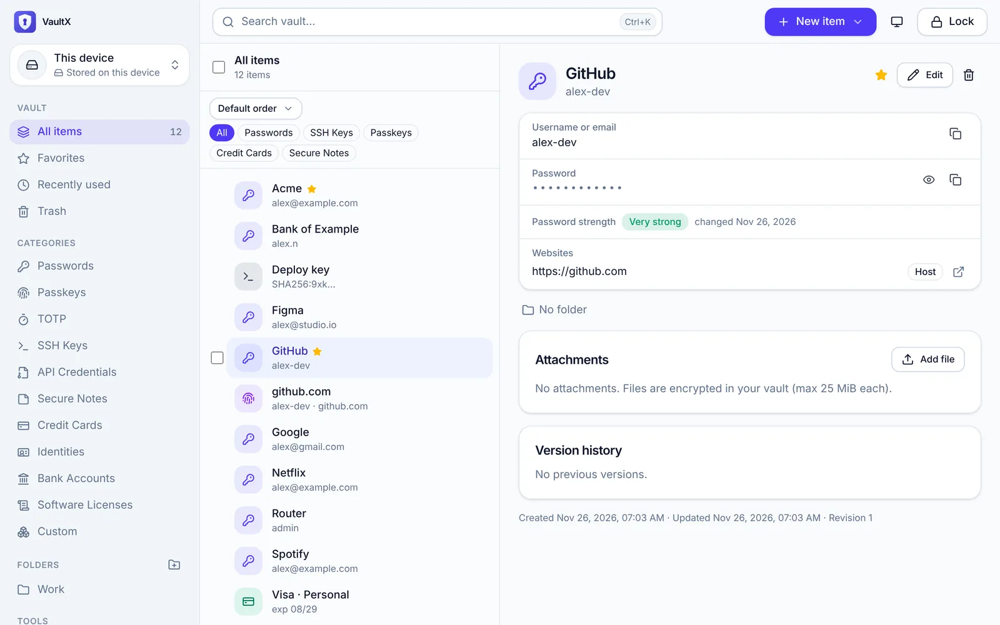
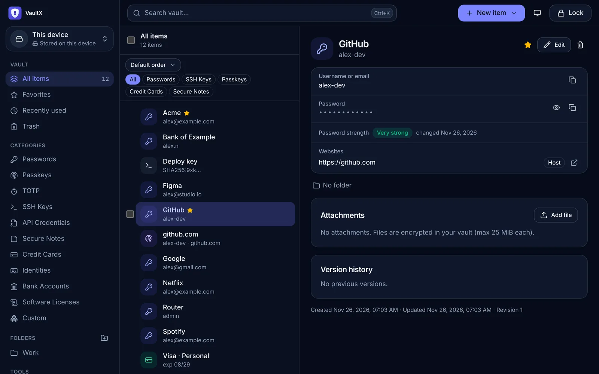
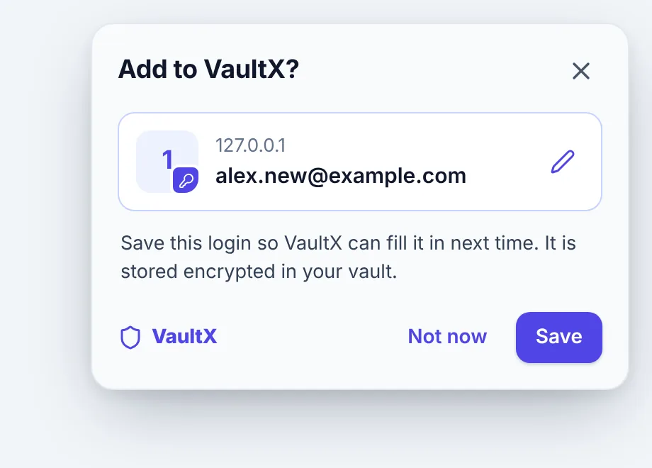
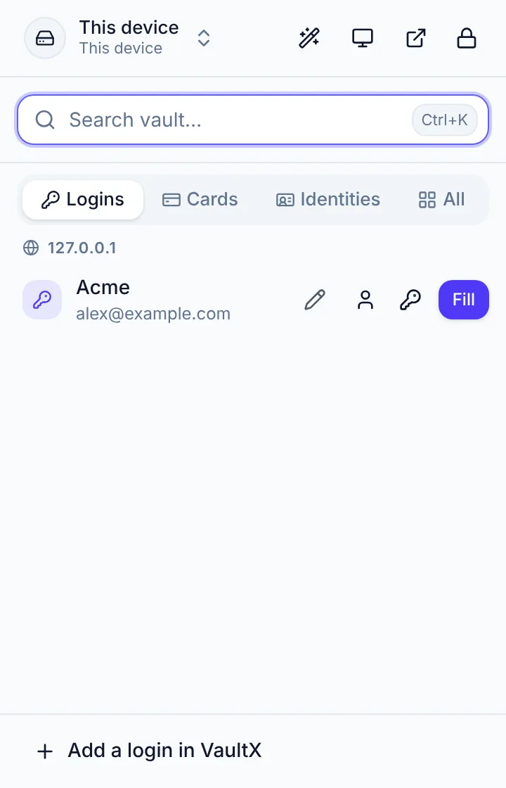
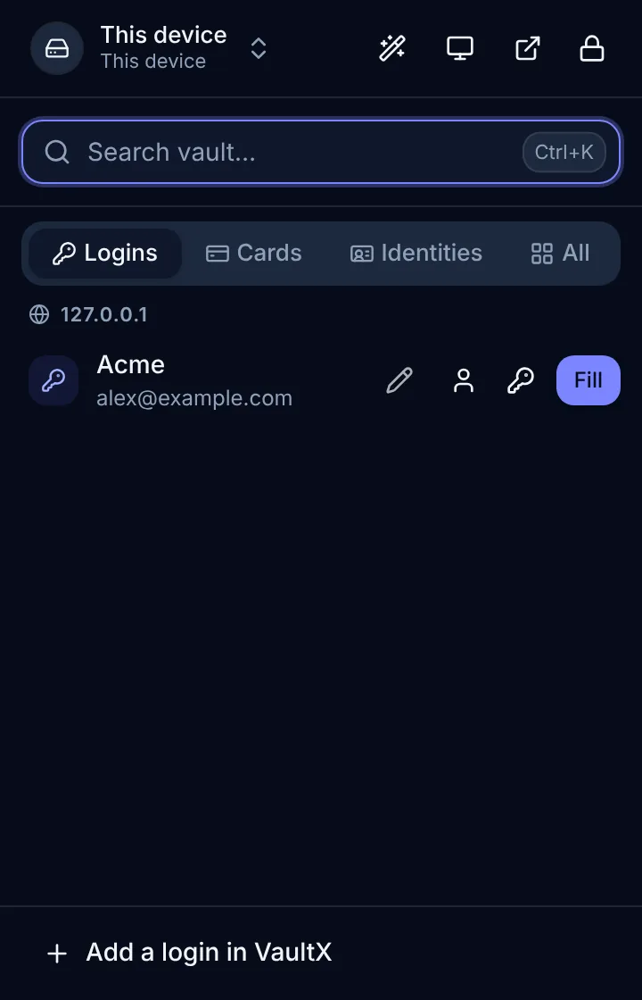
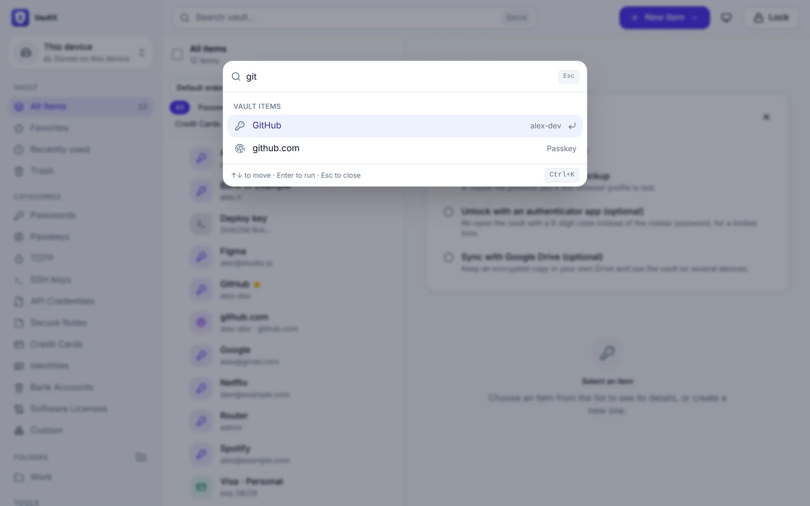

Passwords & passkeys,
encrypted on your device.
VaultX is a local-first password and passkey manager for Firefox and Chromium browsers. No VaultX account, no VaultX server, no telemetry — just strong encryption and an autofill that feels effortless.





Serious security, without the friction
Every feature is designed around one rule: your secrets are decrypted only in your browser, and only when you ask.
Autofill that stays out of the way
A small VaultX icon in login fields, a menu with your accounts, and Ctrl+Shift+L to fill and cycle accounts.
AutofillPasskeys, your way
Create and use passkeys kept encrypted in VaultX — or keep them on your phone or security key and let VaultX remember where they are.
PasskeysStrong passwords, suggested
On sign-up pages VaultX suggests a strong password that follows the site's rules. Customize length and characters in one click.
GeneratorSync to your own Drive
Optional. Your encrypted vault lives in a hidden app folder of your Google account — Google only ever sees ciphertext.
Sync & backupsSecurity Center
Find weak, reused and old passwords, duplicates and insecure websites — with a score and clear next steps.
Security CenterBuilt to be audited
Argon2id, AES-256-GCM envelope encryption, strict CSP, no remote code, and published internal security audits.
Security modelIt knows the site. You just click.
VaultX matches the exact website you are on, never downgrades HTTPS and never fills hidden or cross-origin frames.
- Field icon & inline menu — your accounts for this site, right under the field.
- “Add to VaultX?” — new logins are offered for saving, even after the site redirects.
- Open & fill — click a login in the popup to open its site and fill it there.
- Cards & addresses — checkout forms in a click (cards on HTTPS only).

A generator you can trust
This demo uses the same approach as VaultX: the browser's cryptographic random generator, no modulo bias, and at least one character of each type you pick. Nothing leaves this page.
- Follows a site's
passwordrules— but never makes a password weak. - Passphrases from a 7,776-word list, too.
- History of generated passwords, encrypted in your vault.
Up and running in three steps
Install the add-on
For Firefox (desktop and Android) or any Chromium browser: Chrome, Edge, Brave, Opera, Vivaldi.
Choose where your vault lives
On this device only, or synced through your own Google Drive. Pick a master password only you know.
Import and go
Bring everything from Bitwarden, 1Password, LastPass, Dashlane, KeePass, Chrome or Firefox — with a preview first.
Designed for clarity, in light and dark


Frequently asked
Does VaultX have a server or an account?
No. VaultX runs entirely in your browser. There is no VaultX account, server or telemetry. If you enable sync, the encrypted vault goes to the hidden app folder of your own Google Drive.
What happens if I forget my master password?
Nobody can recover it — that is the point of end-to-end encryption. Keep an encrypted .vaultx backup and write your master password down somewhere safe.
Can VaultX store my passkeys?
Yes. When a site creates a passkey, VaultX can create and keep it encrypted in your vault — or let your device, phone or security key handle it and just remember where it is. Learn more.
Which browsers are supported?
Firefox 140+ on desktop, Firefox for Android 142+, and Chromium browsers 130+ (Chrome, Edge, Brave, Opera, Vivaldi). See Install.
Is it audited?
VaultX has had several internal adversarial security reviews; every finding is published with its fix. An independent third-party audit has not been done yet. Read about the security model.
Your vault. Your device. Your rules.
Install VaultX in a minute. Create a master password, import from your current manager, and you are done — nothing ever leaves your browser unencrypted.